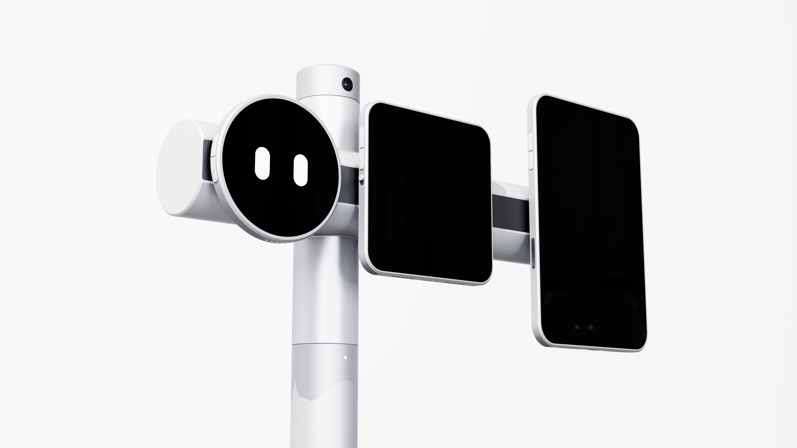
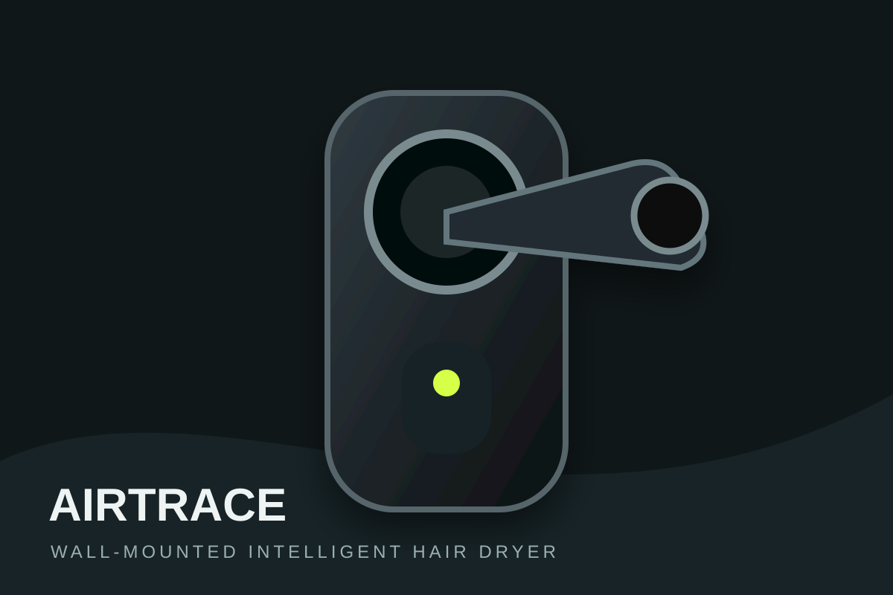
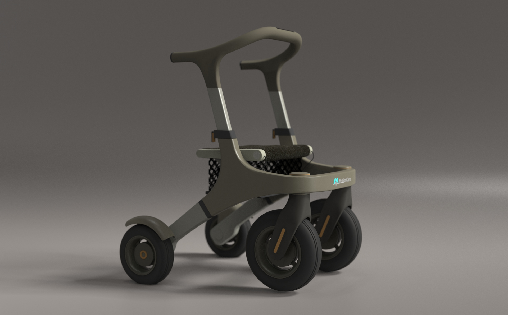
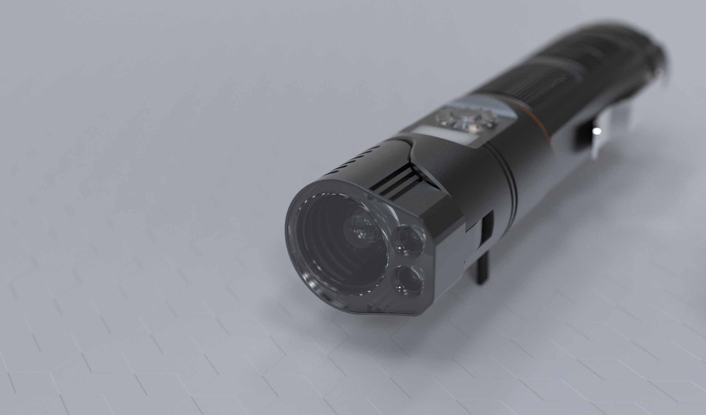

01AI COMPANION · INDUSTRIAL DESIGN
ModuScreen
模块化智能桌面机器人
面向专注工作与智能协作场景，通过三块可拆卸屏幕与灵活铰接结构，探索桌面端人与 AI 的新型沟通方式。
- 覆盖用户研究、痛点数据、系统规划与产品尺寸推演
- 完成草图、模型推敲、人机工程与 CMF 设计
- 以多屏协同和主动陪伴重构桌面工作体验
01 / PROFILE
产品设计本科，GPA 3.66 / 4.0，专业前 10%。具备从用户研究、概念草图、结构与成本可行性讨论，到 Rhino 建模、KeyShot 渲染、交互及 CMF 的完整实践。
经历覆盖产品实现实战项目、一线用户体验与真实商业客户交付。
02 / SELECTED WORK
不只展示结果，更说明为什么这样设计。

01AI COMPANION · INDUSTRIAL DESIGN
面向专注工作与智能协作场景，通过三块可拆卸屏幕与灵活铰接结构，探索桌面端人与 AI 的新型沟通方式。

02AI HARDWARE · PRODUCT PRACTICE
主导三人团队从 0 到 1 定义产品方向。在机械臂、滑轨与固定式方案之间，基于 B 端多人场景、接触卫生、成本与维护复杂度，最终选择墙面固定结构。

03INCLUSIVE DESIGN · MOBILITY
以高龄用户的安全、尊严和户外活动需求为核心，通过行为观察、形态探索与产品表达，设计兼顾辅助和日常使用体验的助行产品。

04CLIENT PROJECT · INDUSTRIAL DESIGN
围绕真实客户需求与 21700 电池约束进行前期定义。个人方案从四个候选方向中获选，并依据生产难度与成本完成三轮迭代。
03 / APPROACH
从用户问题与使用场景中识别机会，建立清晰的产品价值与设计边界。
通过草图与模型快速比较方案，并结合场景、成本和可行性推进决策。
在前期设计中考虑结构、风道、材料工艺、装配复杂度与维护成本。
使用 Rhino、KeyShot、Figma 与 AI 工具，将方案转化为可评审、可交付成果。
04 / FULL PORTFOLIO
完整 PDF 包含 77 页研究过程、设计推演、建模细节与产品效果图。点击按钮即可在线查看，也可通过浏览器下载保存。
LET'S CONNECT